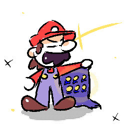
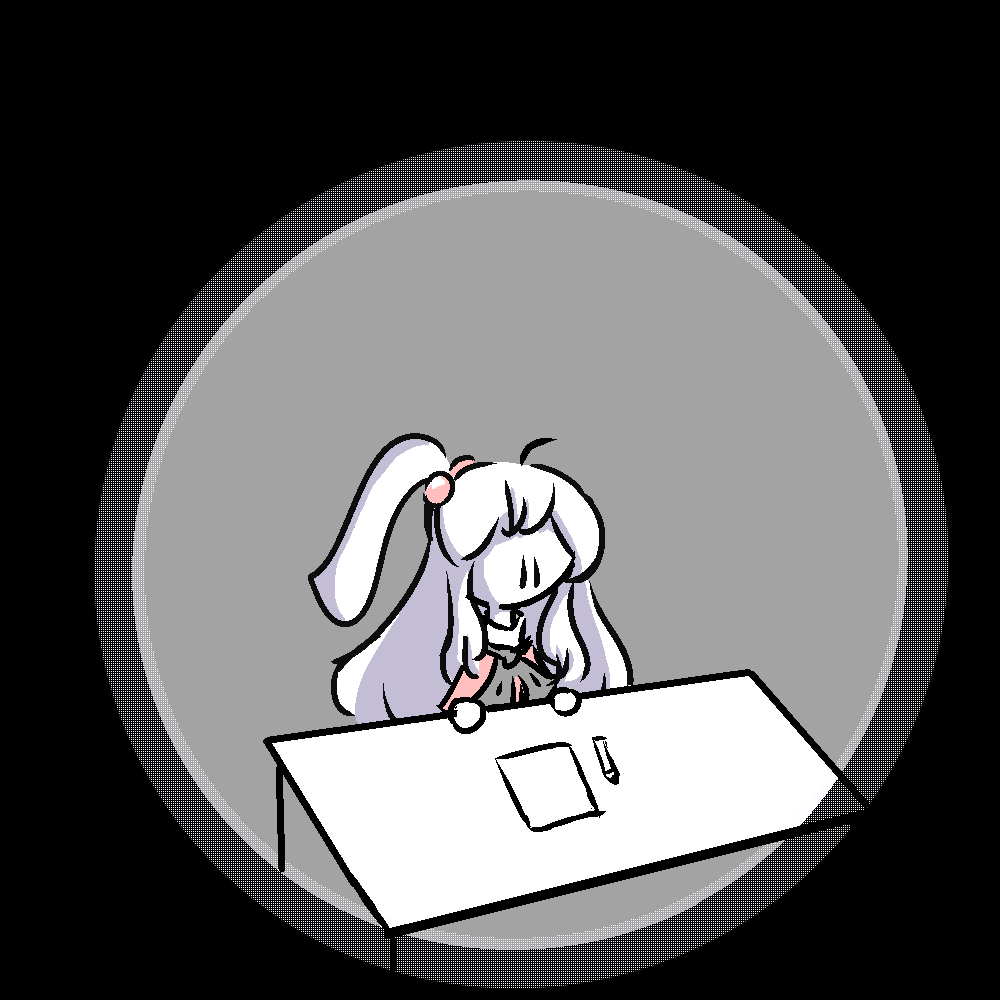

Small vent about my art.
Hi! It has been a small bit since the last blog, isn't it? I am still fine thank you. I've been playing Super Mario Bros. Wonder recently and it's an excellent game! But that's for another time.

(Note: 100% it is actually not that impressive.)
Yep that's the end of the the update, now onto the following subject, my art.
As you might know, it's been since the October of 2022 I've started doing art seriously. Now it has been a year since then. Have I felt I've improved since then?
Yes! And by a lot in my opinion. However I have felt a sense of stagnation recently, whereas I felt like I was improving everyday.
It kinda leaves me empty inside, I know I can do better, but I don't know how. I have a clear goal in mind, and I want to reach it.
When I look at my art, I think it looks good, but I don't really feel any accomplishement about it. I don't tell myself "Wow, what I made was really good!" nowadays.
My art can get better if I spent more than 2 hours doing shit, but if I have nothing to practice, nothing to hone, to learn, what's the point of drawing at the end?
My biggest fear as an artist is to know that I've reached my peak, that I won't be able to do any better.
